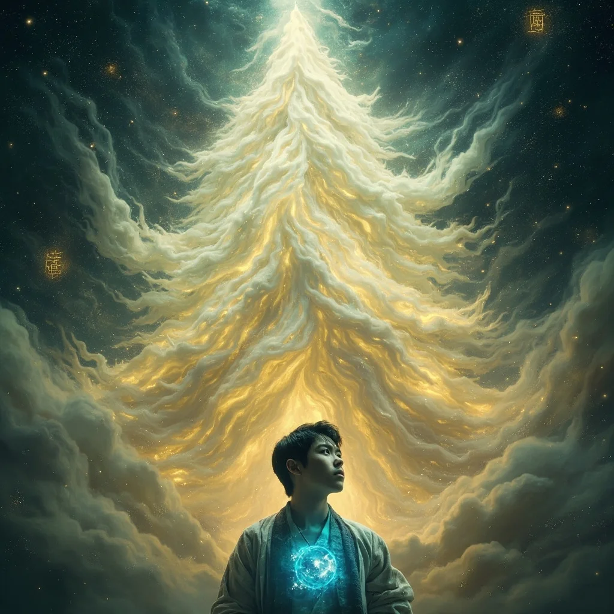
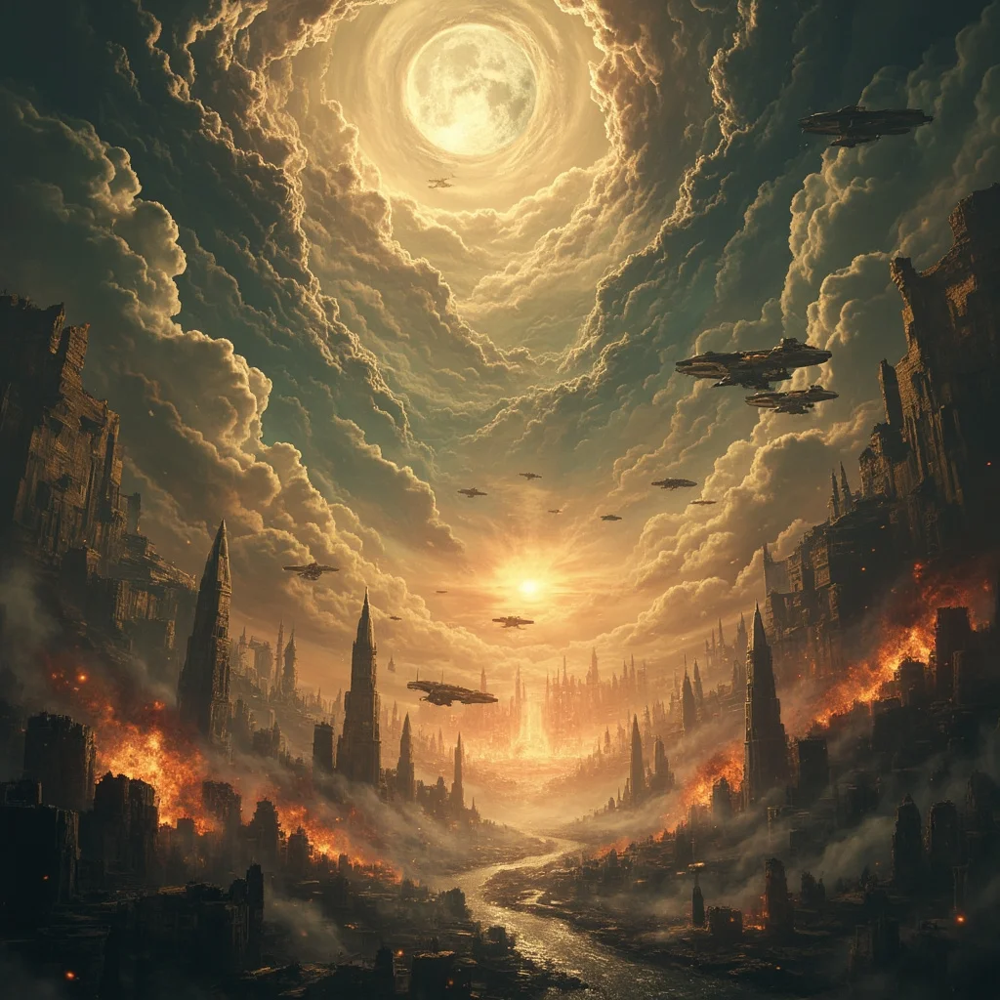
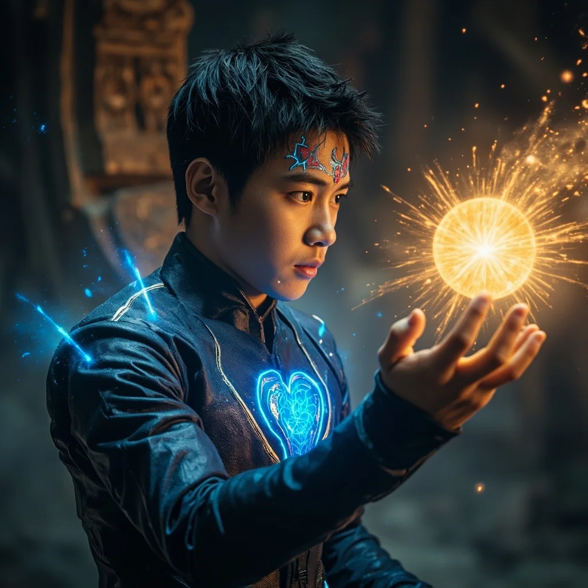
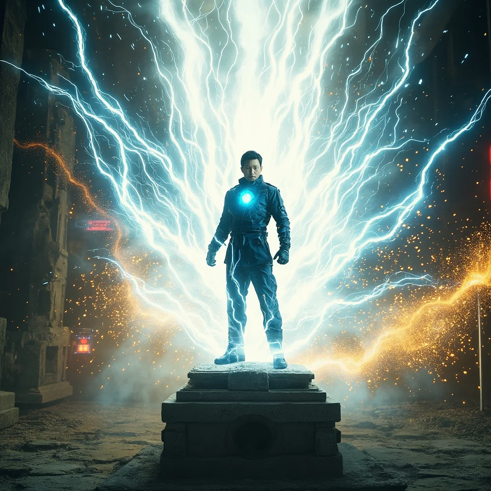

第65章：觀察者的低語
🎧 點擊播放有聲朗讀
🎧 點擊播放有聲朗讀
林塵在地下祭台前，觀察者的聲音再次響起，古老得令人心生敬畏，卻又帶著難以言喻的溫和。火種的光芒在林塵胸口靈芯處產生奇異共振，召喚著他成為「引路人」而非「容器」。

觀察者自稱是「天道殘影」「維度裂隙的旁觀者」「第一紀元的迴響」，是某條修真道路的終極形態，一個放棄所有情感與執念後仍不願消散的意識。玄元前輩在創造林塵靈芯時，摻入了觀察者的一絲殘片。

林塵看到遠古文明被毀滅的幻象——九輪烈日、飛梭穿行、靈氣奔湧的繁榮世界，被天空中撕開的巨大裂縫所吞噬，絕對虛無蔓延吞噬一切。這是一場有意識的「降維」，有人永久封印了通往高維的通道。

林塵決定與火種建立連接，成為它的「引路人」。胸口的量子靈芯爆發前所未有的強烈光芒，與祭台上火種的波動形成節奏同步，兩種光在黑暗中交織，如同兩顆心臟跳動在同一頻率上。

林塵將右手伸向火種，觸碰冰涼表面的那一刻，整個地下空間被一道熾烈白光所淹沒。哨兵發出外來者逼近的警告，破序者的威脅迫在眉睫——而林塵的新旅程，才剛剛開始。（本章完）